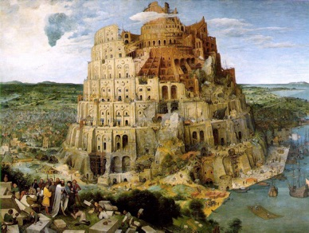

Does Programming Have a Future . Keynote at Festschrift in honor of Professor Martin Odersky, Lausanne, September 2023. Thoughts on the future of programming in the age of AI.
Docucentric Programming . Keynote at Smalltalks22, Buenos Aires, November 2022. Introduction to the Ampleforth live document system, from a Smalltalk perspective.
Tribute to Dan Ingalls . Mountain View, California, October 15th 2022. I had the enormous honor of introducing Dan Ingalls at the Computer History Museum 2022 Fellow Award Ceremony.
Composing Software in an Age of Dissonance . The talk I gave accepting the Dahl-Nygaard award at ECOOP 2017. Thoughts on design and taste structured via composability.
Utopia and Dystopia: Smalltalk and the Wider World . A talk given at Smalltalks 2016 . Tough love for Smalltalk and its community: a friendly critique.
Whither Web Programming . A talk given at InfoQ NY in June 2014. On weaknesses of the web as a programming platform and what can be done about them. Demos a number of projects that build advanced programming technology on top of the web, and discusses why they have an inordinately hard time doing so.
Deconstructing Functional Programming . A talk given at InfoQ San Francisco in November 2013. Takes FP apart, separating the important ideas from the hype and cultural myths. Deliberately provocative and controversial. If you don’t have a sense of humor, don’t watch it.
Does Thought Crime Pay? . A keynote given at Onward! 2013. How Lisp, Smalltalk, Beta and Self led us to the world of C++, Java, Javascript, Python, PHP and Perl.
The Art of Programming Language Design: Confessions of a Connoisseur . A keynote given at Imperial College in September 2012. On the role of taste in PL design.
The Newspeak Experience . Video of a presentation, delivered remotedly to the Hasso Plattner Institute in Potsdam in December 2011. A long talk discussing Newspeak and its IDE in some detail.
Modules as Objects in Newspeak . Slides of my presentation of the paper of the same name at ECOOP 2010 .
Deconstructing Java . A presentation given at PLDE 2010 at IBM Haifa in April 2010. A constructive critique of some features of the Java(tm) programming language with the benefit of hindsight.
The Brave New World of Full Service Computing
. A talk I gave at Microsoft Research in May 2010.
Covers the vision of Objects as Software Services
extensively. 74 minutes.
Linguistic Reflection via Mirrors . A screencast of a lecture I gave at HPI Potsdam in January 2010. A fairly comprehensive talk about mirrors, including a demo of mirrors in Newspeak. 57 minutes.
Inside Newspeak . An interview I gave on Microsoft’s channel 9 during lang.net 09. Gives an overview of the motivation for Newspeak. Makes the connection between Newspeak, objects as software services and cloud computing in a developer-friendly way. 31 minutes.
Hopscotch: An IDE and GUI Application Framework for Newspeak . An overview and demo of Hopscotch (30 minutes) given at lang.net 09.
Embedding DSLs in Newspeak: NewShell, EBNF and Hopscotch . Video of my talk at DSL Dev Con 09. 45 minutes.
Newspeak. Video of talk at lang.net 08 . A high level overview of Newspeak and our parser combinator library, as of January 2008. 30 minutes.
Executable Grammars . Given at JAOO 2007.
Objects as Software Services , An invited talk at the Dynamic Language Symposium at OOPSLA 2005. See a video of an updated version on YouTube.
ECOOP 2005 Banquet Speech, Glasgow, Scotland.
Towards Secure Systems Programming Languages , A keynote talk I gave at SAC 2004.
Pluggable Types , originally given at Aarhus University in March 2003, and repeated since at Berne and elsewhere.
Last updated July 4, 2026
Copyright Gilad Bracha 2006–2027